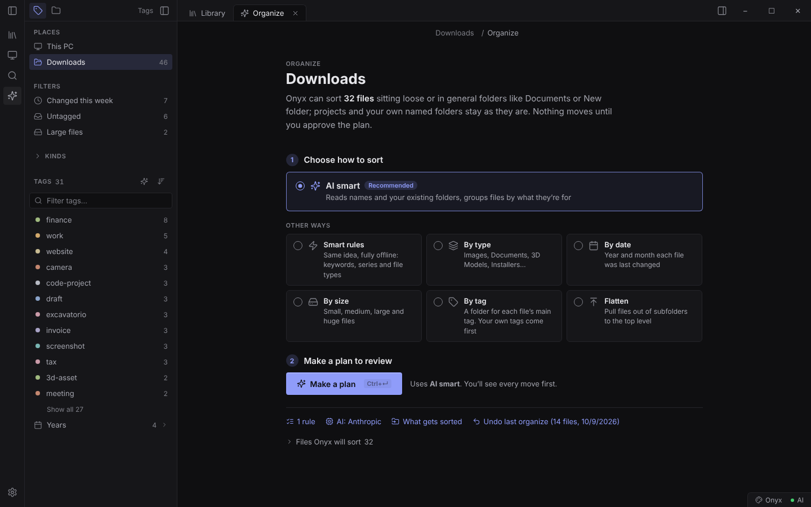
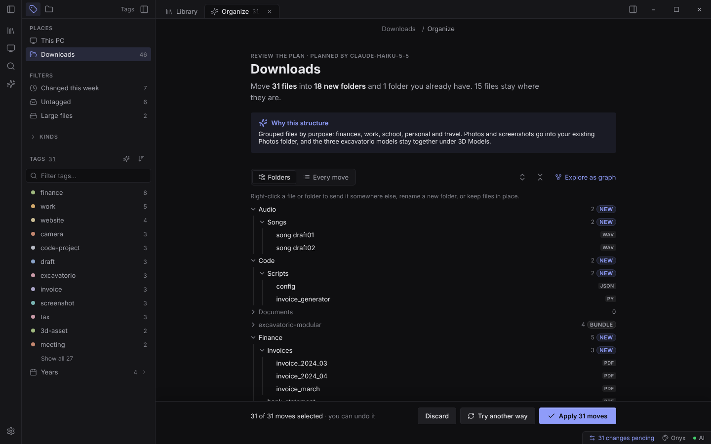
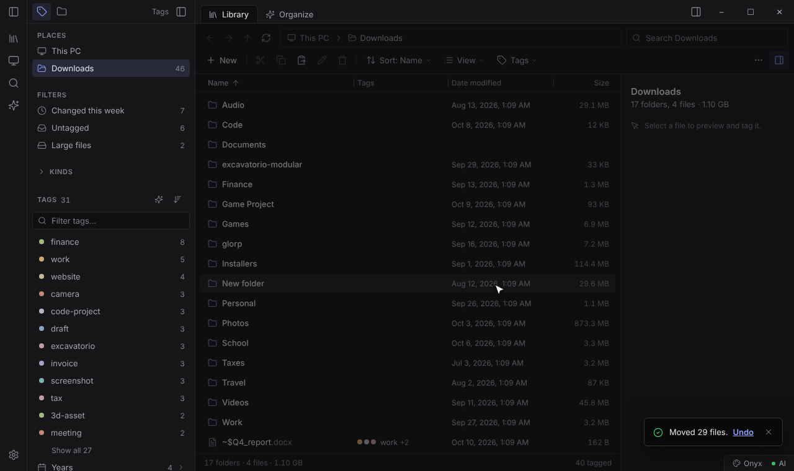
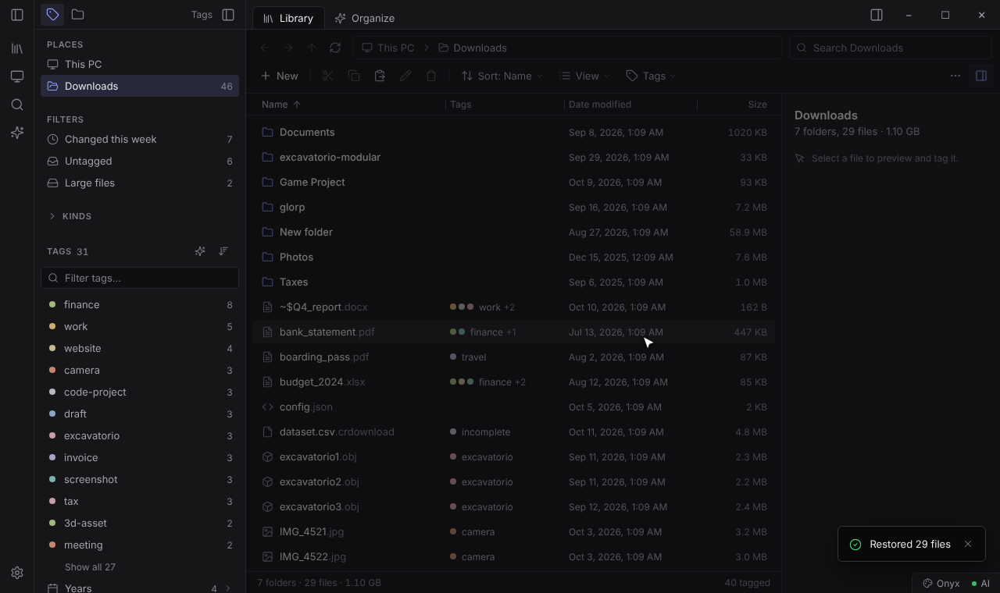
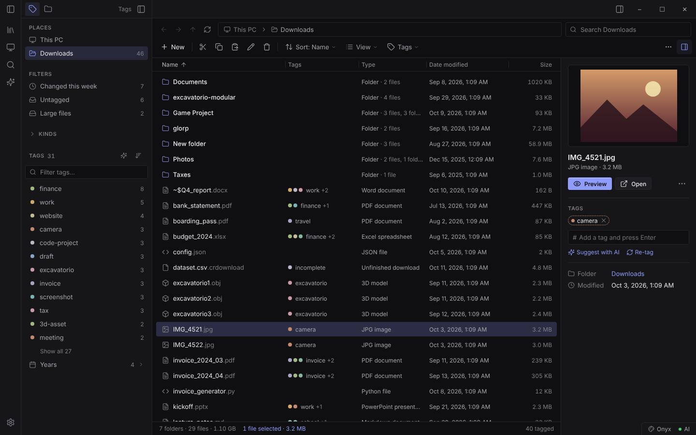
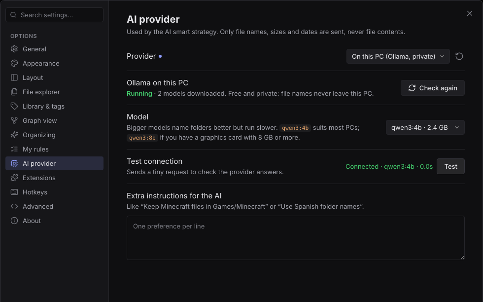

Onyx looks at a messy folder, plans where everything should go, and shows you every move first. Keep what you like, apply it, and undo the whole thing with one click.
Free for personal use, for Windows 10 and 11. No installer needed.
Click a file to keep it where it is.
The app works just like the demo above, on your real folders.




Most organizers move first and never ask. Onyx was designed the other way round.
Make as many plans as you like. Nothing on disk changes until you press Apply.
Files you've edited since go back with your edits. Anything you moved yourself is skipped and listed, never guessed at.
If a name is taken, the file becomes "report (2).pdf". Deleted files go to the Recycle Bin.
Code projects, websites, games and 3D models with their textures are kept together, and folders you named yourself are left alone.
Onyx won't reorganize a drive, Windows, Program Files or your whole user folder. You can still browse and search them.
File names, sizes and dates, never what's inside. Or run the AI on your own PC and nothing leaves it at all.
Onyx doubles as a file explorer that understands what your files are about.
#invoice type:pdf.
Onyx works fully offline. AI makes the folder names smarter, and you choose where it runs.
| Option | What it's like |
|---|---|
| Offline rules | Instant and private. Groups series, keywords and file types. |
| AI on your PC | Private and free. The build script can set up Ollama and pick a model that suits your computer. |
| Online AI | The sharpest folder names. Free without a key, or bring your own. |

Yes, for personal use. You can download it, run it and tweak your own copy. Using it inside a business or redistributing it needs permission.
Yes. Onyx isn't signed with a paid code-signing certificate yet, so Windows warns about it like any new app. Click More info, then Run anyway. The full source code is public on GitHub if you'd like to look first.
Press Undo and every file goes back where it was. Files you've changed since keep your changes, and nothing is ever overwritten.
File names, sizes and dates, never what's inside your files. With AI on your PC, nothing leaves your computer at all, and the offline rules send nothing anywhere.
It isn't a plugin, but it was built in the same spirit: a graph view, tags, a command palette, docked panels and themes you can rebuild. It sits comfortably next to a vault, for the files around it.
Yes. On the start screen, choose Try the demo: a messy folder that only exists in memory.
Unzip it, open Onyx.exe and pick a folder. It takes a minute.